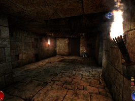
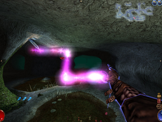

Arx Libertatis
Dieser Artikel wurde für die folgenden Ubuntu-Versionen getestet:
Ubuntu 14.04 Trusty Tahr
Zum Verständnis dieses Artikels sind folgende Seiten hilfreich:
Arx Libertatis  (Offene Zuflucht) ist ein 3D-Rollenspiel, das auf dem 2002 von JoWood veröffentlichtem Spiel Arx Fatalis (Verhängnisvolle Zuflucht) basiert. Der Quellcode der Originalengine wurde Anfang 2011 veröffentlicht. Das Arx-Libertatis-Projekt verfolgt seitdem das Ziel, das Spiel auf allen modernen Systemen spielbar zu machen, Fehler zu entfernen und langfristig auch grafisch und inhaltlich zu modernisieren. Die ersten beiden Ziele wurden bereits umgesetzt.
(Offene Zuflucht) ist ein 3D-Rollenspiel, das auf dem 2002 von JoWood veröffentlichtem Spiel Arx Fatalis (Verhängnisvolle Zuflucht) basiert. Der Quellcode der Originalengine wurde Anfang 2011 veröffentlicht. Das Arx-Libertatis-Projekt verfolgt seitdem das Ziel, das Spiel auf allen modernen Systemen spielbar zu machen, Fehler zu entfernen und langfristig auch grafisch und inhaltlich zu modernisieren. Die ersten beiden Ziele wurden bereits umgesetzt.
Der Spieler erwacht ohne Habe und Erinnerung in einer unterirdischen Gefängniszelle, aus der er mit Hilfe eines Mitgefangenen flieht und die mittelalterlich angelehnte Welt von Arx erforscht. Im Verlauf erfährt er, dass die verschiedenen Rassen von Arx nach dem Erkalten der Sonne in die von Zwergen errichteten Minen geflohen sind und nun in der Unterwelt ihr Dasein fristen. Die Trolle, Goblins, Menschen und weiteren Fraktionen haben sich notgedrungen miteinander eingerichtet und alte Feindschaften beigelegt. Allerdings häufen sich ungewöhnliche Erdbeben und Ritualmorde, Menschen werden entführt und ein seltsamer Kult treibt sein Unwesen.
Das Geschehen findet ausschließlich in Höhlen, Kavernen und Tunneln statt, die Oberfläche bleibt unzugänglich. Die Welt bietet dennoch vielfältige Möglichkeiten. So kann der Spieler jagen, angeln, Brot backen, Tränke brauen, Waffen herstellen und verbessern. Auch die Magieanwendung ist ungewöhnlich: in Anlehnung an das zuvor erschienene Black & White zeichnet der Spieler mit der Maus magische Symbole auf den Bildschirm. Das Magiesystem ist hier mit 20 verschiedenen Runen und 40 Zaubersprüchen recht komplex. Auch gibt es abseits der im Zauberbuch beschriebenen Sprüche noch ein paar nicht offizielle Runenkombinationen zu entdecken. Bis zu drei Zauber lassen sich vormerken und per Schnelltaste aktivieren. Waffen und Rüstungen nutzen bei Gebrauch ab und müssen gelegentlich repariert werden.
Das Spiel hat starke Ähnlichkeiten mit der Ultima-Underworld-Reihe und war ursprünglich als dritter Teil geplant. Da die Entwickler keine Lizenz für eine offizielle Fortsetzung bekamen, wurde ein eigenständiges Spiel daraus. Das Spiel bekam bei seiner Veröffentlichung durchweg positive Bewertungen und zeichnet sich durch einen großen Umfang und die vielfältigen Möglichkeiten aus.
|  |  |
| Im Kerker | Magieanwendung |
Installation¶
Auf der Seite des Arx Libertatis WIKI findet man die Installationsanweisungen für verschiedene Systeme.
Möchte man das Ubuntu-Paket installieren, bietet sich eine Installation über das offizielle PPA an. Dazu wird eine zusätzliche Paketquelle[4] verwendet:
Adresszeile zum Hinzufügen des PPAs:
ppa:arx/release
Hinweis!
Zusätzliche Fremdquellen können das System gefährden.
Ein PPA unterstützt nicht zwangsläufig alle Ubuntu-Versionen. Weitere Informationen sind der  PPA-Beschreibung des Eigentümers/Teams arx zu entnehmen.
PPA-Beschreibung des Eigentümers/Teams arx zu entnehmen.
Damit Pakete aus dem PPA genutzt werden können, müssen die Paketquellen neu eingelesen werden.
Folgendes Paket muss installiert[3] werden:
arx-libertatis (ppa)
 mit apturl
mit apturl
Paketliste zum Kopieren:
sudo apt-get install arx-libertatis
sudo aptitude install arx-libertatis
Das Spiel ist nun installiert, inklusive einem Eintrag in "Anwendungen -> Spiele -> Arx Libertatis".
Spieldaten und Patch¶
Um Arx Libertatis zu spielen werden die Dateien des Originalspiels benötigt. Die Spieldaten installiert man am Besten mit dem mitgeliefertem Installationsskript.
Der folgende Befehl (als root ausführen[2]) startet das mit Arx Libertatis installierte Skript:
arx-install-data
Das Skript bietet verschiedene Optionen an, um die Spieldateien zu erhalten. Möglich sind sowohl die direkte Kopie von der eingelegten Original-CD, als auch von einer unter Windows oder Wine[5] installierten Version oder einem benutzerdefiniertem Verzeichnis. Auch die Aktualisierung mittels Patch kann mit dem Skript bewerkstelligt werden.
Das Spiel ist außerdem über Steam oder GOG.com erhältlich. Installiert man Arx per Wine von CD, muss das Spiel noch auf die Version 1.21  [5] aktualisiert werden, bevor man die Spieldaten importiert. Bei den online erhältlichen Versionen ist dies nicht mehr nötig, sie sind bereits auf dem aktuellem Stand.
[5] aktualisiert werden, bevor man die Spieldaten importiert. Bei den online erhältlichen Versionen ist dies nicht mehr nötig, sie sind bereits auf dem aktuellem Stand.
Demodateien¶
Falls man das Spiel nicht besitzt und erst testen möchte, kann man die englische Demoversion verwenden:
arx-install-data /pfad/zu/arx_demo_english.zip
Bedienung¶
Steuern lässt sich Arx Libertatis wie ein herkömmlicher Egoshooter. Ein paar kleinere Besonderheiten gibt es allerdings: so wird mit der rechten Maustaste zwischen Maussicht und Aktionsmodus umgeschaltet, in dem auch das Inventar eingeblendet wird. Die Bedienung folgt einem sehr logischem Aufbau. Um Gegenstände miteinander zu benutzen, führt man im Inventar einen Doppelklick auf das erste Objekt aus und klickt dann auf das zu kombinierende Objekt. So wird aus der Verwendung von Mehl mit Wasser Teig. Legt man den Teig nun auf einen Ofen oder ins Feuer, wird Brot daraus. Benutzt man einen scharfen Gegenstand (Dolch, Schwert, Axt) mit einem Stück Holz, erhält man Holzpflöcke, mit denen man Untote dauerhaft außer Gefecht setzen kann. Das Magiesystem folgt dieser Logik. So hat jede Rune eine Bedeutung, beispielsweise Mega=Verstärkung, Movis=Bewegung, usw. Der Spruch "Mega Movis" führt also zu einer Beschleunigung der Spielfigur. Es lohnt sich, die verschiedensten Kombinationen von Gegenständen oder Runen auszutesten. Bekommt man neue Runen und zieht Diese vom Inventar auf den Charakterbildschirm, werden sie aktiviert und neu verfügbare Zauber werden automatisch im Zauberbuch eingetragen. Beim zeichnen der Zaubersprüche gibt es übrigens nur gerade und schräge Linien, keine runden Formen.
Nachfolgend ein paar Beispiele für kombinierbare Gegenstände:
| Kombinierbare Objekte | |
| Zutaten | Ergebnis |
| Stück Holz + Seil | Angel |
| Knoblauch + Waffe + Waffe verzaubern | Magische Waffe mit Geschicklichkeitsbonus |
| Knochen + Mörser | Knochenpulver |
| Knochenpulver + Waffe + Waffe verzaubern | Magische Waffe mit Stärkebonus |
| Farn + Mörser | Grünes Pulver |
| Grünes Pulver + Leere Flasche + Destille | Gift |
Und ein paar inoffizielle Zaubersprüche:
| Zaubersprüche | |
| Benötigte Runen | Wirkung |
| Rhaa Vitae | Schaden |
| Rhaa Stregum Vitae | Fluch |
| Vitae Movis | Lebensentzug |
| Aam Fridd Taar | Eisgeschoss |
| Aam Fridd Spacium | Eiswand |
| Aam Cetrius Taar | Giftwolke |
Tastenkürzel¶
Die wichtigsten Tasten:
| Arx Libertatis | |
| Taste(n) | Funktion |
| W S A D Q E | Vorwärts/Rückwärts/Links/Rechts/Nach links/rechts lehnen |
| Sprung | |
 | Aktion (sprechen, kämpfen, Dinge aufheben/benutzen/öffnen |
 | Wechsel zwischen Maussicht und Aktionsmodus / Inventar öffnen |
| Tab ⇆ | Waffe ziehen |
| Strg | Zauber wirken |
| Strg + ⇧ | Zauber vormerken |
| 1 2 3 | Vorgemerkte Zauber einsetzen |
| F5 F9 | Schnellspeichern/-laden |
Weitere Tastenbelegungen finden sich in den Spieloptionen.
Spielstände¶
Aufgrund von Codeänderungen im Spielstandformat können die mit Arx Libertatis erstellten Spielstände nicht von Arx Fatalis geladen werden. Umgekehrt ist es aber problemlos möglich, so dass man seine alten Spielstände (oder online heruntergeladene) auch mit Arx Libertatis nutzen kann.
Spielstände werden im Ordner ~/.local/share/arx/save/ des angemeldeten Benutzers gespeichert.
Sprache¶
In Arx Libertatis ist sowohl deutsche als auch englische Sprachausgabe verfügbar. Die Sprecher sind teils professionell besetzt, so werden die Trolle in der deutschsprachigen Variante beispielsweise von Donald Arthur gesprochen, welcher bereits dem Chefkoch in Southpark seine Stimme lieh. Weitere Übersetzungen der Texte existieren mittlerweile u.A. in polnischer, türkischer und koreanischer Sprache.
Entwicklungsstand¶
Die derzeitig aktuelle Version 1.1.1 von Arx Libertatis ist bereits vollständig spielbar und beeinhaltet viele Verbesserungen gegenüber dem Originalspiel. So wurde das Programm auf SDL, OpenGL und OpenAl portiert und manche Fehler ausgemerzt. Für nachfolgende Versionen sind Verbesserungen der Grafik und Modernisierungen des Interfaces geplant. Das Projekt sucht Programmierer und Grafiker, die das bestehende Team erweitern.
Verwandte Projekte¶
Abgesehen von Arx Libertatis existieren noch zwei weitere Projekte auf loser Basis von Arx Fatalis. Arx - End of Sun ist ein Prequel als Mod für Doom 3, Arx Catalyst erzählt die Geschichte der Gilde der Reisenden. Beide Projekte sind allerdings noch in einem sehr frühem Entwicklungsstadium, die Fertigstellung ist teils fragwürdig.
Problembehebung¶
arx-install-data findet speech.pak und sfx.pak nicht¶
Bei der GOG-Version von Arx Fatalis heißen die Dateien SPEECH.pak und SFX.pak. Da Ubuntu/Linux entgegen Windows bei Dateinamen Groß- und Kleinschreibung unterscheidet, findet arx-install-data die Dateien im Installationsverzeichnis von Arx Fatalis nicht. Es kommt zu den Meldungen:
Detecting data language... speech*.pak not found
und
Missing sfx.pak! ... There are wrong or missing files!
Nach deren Umbenennung in speech.pak und sfx.pak sollte die Installation funktionieren.

Infobox¶
| Arx Libertatis | |
| Originaltitel: | Arx Libertatis |
| Genre: | Rollenspiel |
| Sprache: |  |
| Veröffentlichung: | 2013 |
| Publisher: | JoWood |
| Systemvoraussetzungen: | 500 Mhz Prozessor / 64 MB RAM / 700 MB Festplattenplatz |
| Medien: | CD (1) / Download |
| EAN: | 9006113099017 |
| Läuft mit: | nativ |
- Erstellt mit Inyoka
-
 2004 – 2017 ubuntuusers.de • Einige Rechte vorbehalten
2004 – 2017 ubuntuusers.de • Einige Rechte vorbehalten
Lizenz • Kontakt • Datenschutz • Impressum • Serverstatus -
Serverhousing gespendet von